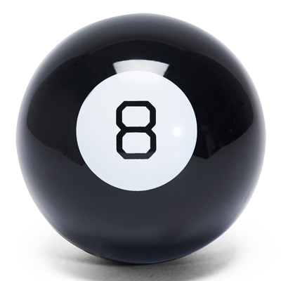

Magic 8-Ball
The Magic 8-Ball is a plastic fortune telling device made to look like an 8-ball from pool. It was invented by Albert C. Carter and Abe Bookman in 1950 and is currently being manufactured by the toy company, Mattel. 
/>
Click here to
return to my home page